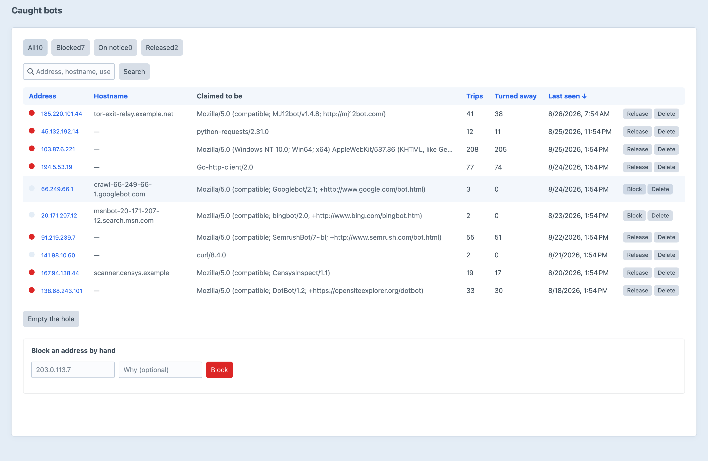

A honeypot for bad bots.
A trap nothing well-behaved will ever walk into, and a permanent block for everything that does.
One Disallow line, on one path. Every crawler that reads the file obeys it.
Hidden, nofollow, out of the tab order. No reader sees it and no screen reader announces it.
Getting there took ignoring an explicit instruction. That is the whole test, and it has no false positives to argue about.
Behaviour, not claims.
Spliced into every front-end page before the last </body> — or placed by hand, wherever you want it.
<a href="/blackhole" title="Do NOT follow this link or you will be banned from this site!" rel="nofollow" style="display:none;" aria-hidden="true" tabindex="-1"> </a>
So anything claiming to be one is made to prove it, the way Google documents.
Two DNS lookups, cached for a day, and only ever on something that already reached the trap.
One indexed lookup at EVENT_BEFORE_REQUEST, and a banned address gets no further.
Asking “is this visitor logged in?” starts a session — and a Set-Cookie on every response is a full-page cache that never hits again. So it is asked last, not first.
One row per address, filterable, searchable and sortable — opening onto that address’s whole request history.
A blocked bot speeds up rather than going away, so repeat attempts cost one arithmetic UPDATE — not a row each.
Install it, let it write the robots.txt directives, and the hidden link is already on every page.
Crawlers that walked a link no human can see, by IP, with what they claimed to be.
